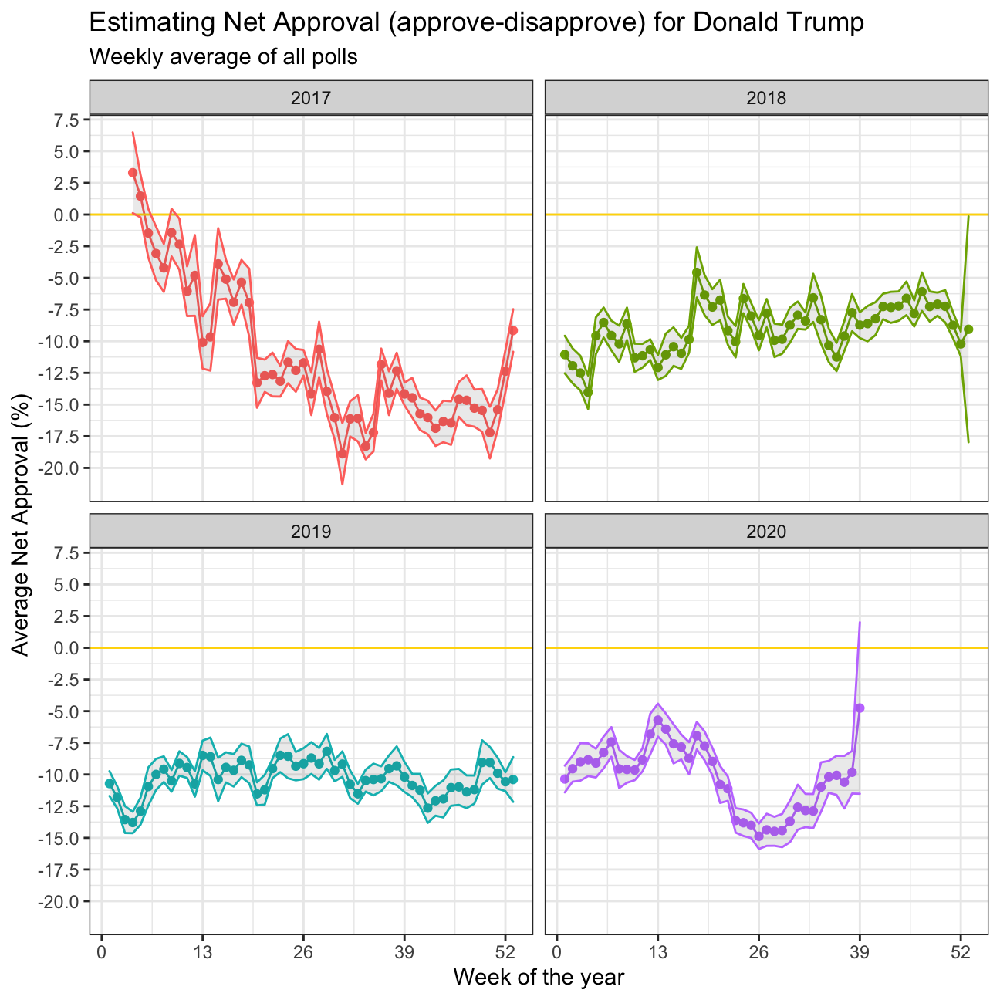

As we saw in class, fivethirtyeight.com has detailed data on all polls that track the president’s approval
# Import approval polls data
approval_polllist <- read_csv(here::here('data', 'approval_polllist.csv'))
# Take a look at data
glimpse(approval_polllist)## Rows: 15,619
## Columns: 22
## $ president <chr> "Donald Trump", "Donald Trump", "Donald Trump", "…
## $ subgroup <chr> "All polls", "All polls", "All polls", "All polls…
## $ modeldate <chr> "9/27/2020", "9/27/2020", "9/27/2020", "9/27/2020…
## $ startdate <chr> "1/20/2017", "1/20/2017", "1/20/2017", "1/21/2017…
## $ enddate <chr> "1/22/2017", "1/22/2017", "1/24/2017", "1/23/2017…
## $ pollster <chr> "Gallup", "Morning Consult", "Ipsos", "Gallup", "…
## $ grade <chr> "B", "B/C", "B-", "B", "B-", "C+", "B+", "B", "C+…
## $ samplesize <dbl> 1500, 1992, 1632, 1500, 1651, 1500, 1190, 1500, 1…
## $ population <chr> "a", "rv", "a", "a", "a", "lv", "rv", "a", "lv", …
## $ weight <dbl> 0.262, 0.680, 0.153, 0.243, 0.142, 0.200, 1.514, …
## $ influence <dbl> 0, 0, 0, 0, 0, 0, 0, 0, 0, 0, 0, 0, 0, 0, 0, 0, 0…
## $ approve <dbl> 45.0, 46.0, 42.1, 45.0, 42.3, 57.0, 36.0, 46.0, 5…
## $ disapprove <dbl> 45.0, 37.0, 45.2, 46.0, 45.8, 43.0, 44.0, 45.0, 4…
## $ adjusted_approve <dbl> 45.7, 45.3, 43.2, 45.7, 43.4, 51.5, 37.6, 46.7, 5…
## $ adjusted_disapprove <dbl> 43.6, 38.3, 43.9, 44.6, 44.5, 44.5, 42.8, 43.6, 4…
## $ multiversions <chr> NA, NA, NA, NA, NA, NA, NA, NA, NA, NA, NA, NA, N…
## $ tracking <lgl> TRUE, NA, TRUE, TRUE, TRUE, TRUE, NA, TRUE, TRUE,…
## $ url <chr> "http://www.gallup.com/poll/201617/gallup-daily-t…
## $ poll_id <dbl> 49253, 49249, 49426, 49262, 49425, 49266, 49260, …
## $ question_id <dbl> 77265, 77261, 77599, 77274, 77598, 77278, 77272, …
## $ createddate <chr> "1/23/2017", "1/23/2017", "3/1/2017", "1/24/2017"…
## $ timestamp <chr> "00:45:20 27 Sep 2020", "00:45:20 27 Sep 2020", "…# Use `lubridate` to fix dates, as they are given as characters
approval_polllist_cleaned <- approval_polllist %>%
mutate(modeldate = mdy(modeldate),
startdate = mdy(startdate),
enddate = mdy(enddate),
createddate = mdy(createddate),
timestamp = parse_date_time(timestamp,
orders = "hmsdmy"))
# Take a look at cleaned data
glimpse(approval_polllist_cleaned)## Rows: 15,619
## Columns: 22
## $ president <chr> "Donald Trump", "Donald Trump", "Donald Trump", "…
## $ subgroup <chr> "All polls", "All polls", "All polls", "All polls…
## $ modeldate <date> 2020-09-27, 2020-09-27, 2020-09-27, 2020-09-27, …
## $ startdate <date> 2017-01-20, 2017-01-20, 2017-01-20, 2017-01-21, …
## $ enddate <date> 2017-01-22, 2017-01-22, 2017-01-24, 2017-01-23, …
## $ pollster <chr> "Gallup", "Morning Consult", "Ipsos", "Gallup", "…
## $ grade <chr> "B", "B/C", "B-", "B", "B-", "C+", "B+", "B", "C+…
## $ samplesize <dbl> 1500, 1992, 1632, 1500, 1651, 1500, 1190, 1500, 1…
## $ population <chr> "a", "rv", "a", "a", "a", "lv", "rv", "a", "lv", …
## $ weight <dbl> 0.262, 0.680, 0.153, 0.243, 0.142, 0.200, 1.514, …
## $ influence <dbl> 0, 0, 0, 0, 0, 0, 0, 0, 0, 0, 0, 0, 0, 0, 0, 0, 0…
## $ approve <dbl> 45.0, 46.0, 42.1, 45.0, 42.3, 57.0, 36.0, 46.0, 5…
## $ disapprove <dbl> 45.0, 37.0, 45.2, 46.0, 45.8, 43.0, 44.0, 45.0, 4…
## $ adjusted_approve <dbl> 45.7, 45.3, 43.2, 45.7, 43.4, 51.5, 37.6, 46.7, 5…
## $ adjusted_disapprove <dbl> 43.6, 38.3, 43.9, 44.6, 44.5, 44.5, 42.8, 43.6, 4…
## $ multiversions <chr> NA, NA, NA, NA, NA, NA, NA, NA, NA, NA, NA, NA, N…
## $ tracking <lgl> TRUE, NA, TRUE, TRUE, TRUE, TRUE, NA, TRUE, TRUE,…
## $ url <chr> "http://www.gallup.com/poll/201617/gallup-daily-t…
## $ poll_id <dbl> 49253, 49249, 49426, 49262, 49425, 49266, 49260, …
## $ question_id <dbl> 77265, 77261, 77599, 77274, 77598, 77278, 77272, …
## $ createddate <date> 2017-01-23, 2017-01-23, 2017-03-01, 2017-01-24, …
## $ timestamp <dttm> 2020-09-27 00:45:20, 2020-09-27 00:45:20, 2020-0…We calculate the average net approval rate for each week to see how public opinion has evolved over his presidency.
alpha <- 0.05
approval_pollist_summary <- approval_polllist_cleaned %>%
#Keep only voters as the subgroup
filter(subgroup=="Voters") %>%
mutate(week = week(enddate), year = year(enddate)) %>%
mutate(avg_net_approval = adjusted_approve - adjusted_disapprove, year = year(enddate)) %>%
group_by(week, year) %>%
#Calculate average net rate on a weekly basis
#Definine confidence intervals
summarise(year = year, week = week, mean_approval = mean(avg_net_approval), lower = mean(avg_net_approval) - qt(1- alpha/2, (n() - 1))*sd(avg_net_approval)/sqrt(n()), upper = mean(avg_net_approval) + qt(1- alpha/2, (n() - 1))*sd(avg_net_approval)/sqrt(n())) %>%
unique(by = c("week", "year")) %>%
arrange(year, week)
#Plot the data
trump_plot <- ggplot(approval_pollist_summary, aes(x=week,y=mean_approval, color = as.factor(year))) +
geom_line() +
facet_wrap(~year) +
geom_point() +
geom_hline(yintercept=0, color = "gold") +
geom_ribbon(aes(ymin=lower, ymax=upper), linetype=1, alpha=0.1) +
labs(title = "Estimating Net Approval (approve-disapprove) for Donald Trump", subtitle = "Weekly average of all polls", y = "Average Net Approval (%)", x = "Week of the year") +
theme_bw() +
theme(legend.position="none") +
scale_color_manual(values = c("#FF736C","#7DAE00","#00BBBD","#C47EFF")) +
scale_y_continuous(labels = scales::number_format(accuracy = 0.1, decimal.mark = '.'), breaks = c(7.5, 5, 2.5,0.0,-2.5, -5.0, -7.5, -10.0, -12.5, -15.0, -17.5, -20.0)) +
scale_x_continuous(breaks = c(0, 13, 26, 39, 52))
trump_plot
We compare the confidence intervals for week 15 (6-12 April 2020) and week 34 (17-23 August 2020).
#print a table of related variables for further comparison
average_per_week_15_34 <- approval_pollist_summary %>%
filter(year == 2020, week %in% c(15,34)) %>%
mutate(upper_minus_lower = upper - lower)
kbl(average_per_week_15_34) %>%
kable_styling(full_width = F) %>%
kable_styling(bootstrap_options = c("striped", "hover", "condensed", "responsive"))| week | year | mean_approval | lower | upper | upper_minus_lower |
|---|---|---|---|---|---|
| 15 | 2020 | -7.58 | -9.12 | -6.04 | 3.08 |
| 34 | 2020 | -10.99 | -12.94 | -9.04 | 3.90 |
When looking at the interval from week 15 (6-12 April 2020) to week 34 (17-23 August 2020) we can see that while the average net approval is decreasing, the 95% confidence interval is growing. The observed decline in average net approval is to be expected, as Trump’s handling of the Covid-19 pandemic has been sloppy and the U.S. becomes one of the most severe outbreaks of the virus, given poorly enforced and coordinated federal measures and weak norm compliance. The increase in the confidence interval could be due to the uncertain times right now, leading people to be more undecided and unsure about their vote.